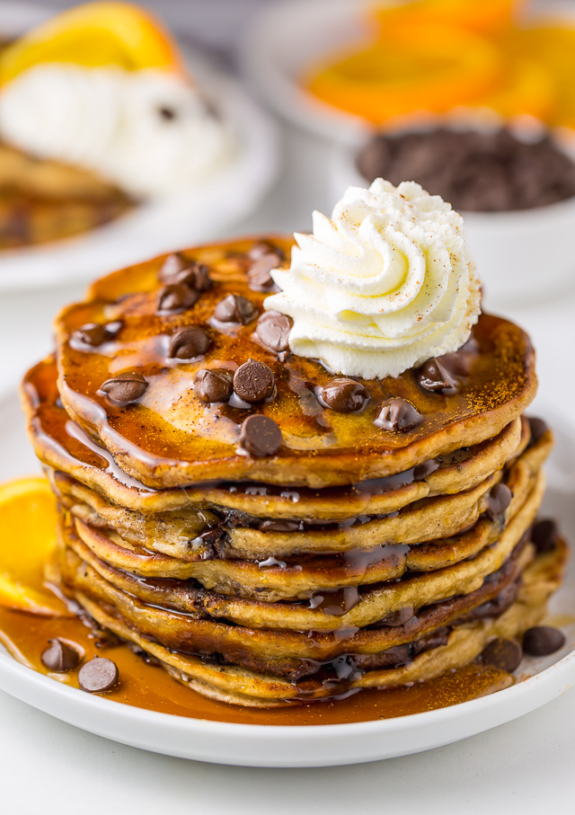

So lets start out with the first meal of the day, breakfest! My favorite breakfest food would probably have to be chocolate pancakes. I mean c'mon who doesn't like some chocolate pancakes in the morning?! To go along with that I will most definitely have some scrambled eggs and hash browns to go with it! To wrap everything up, (no pun intended) I will have either a tall glass of chocolate milk or OJ to go with it!
Lunch on the other hand is tough. I debate lunch everyday in my mind because its all on how I feel at the moment ya know?? Anyways, the most delicious lunch I would prefer everyday would be leftovers from the night before! Who wants to go through the whole process of cooking three times a day when you can just eat leftovers for lunch! That's the way I do it! Plus, its easy and quick to do! All you do is pop it in the microwave! I'd more than likely have some fruit like grapes, pineapple, or watermelon to go with it along with a glass of V8 fruit juice!
Finally lets talk about dinner, my favorite meal of the day! My favorite dinner would be grilled BBQ chicken with a side of couscous and corn to top it off! Of course my mom makes me have a salad with every dinner even tho they're disgusting because they have spinach in them and it makes a funny sound on your teeth when you chew it! It makes my skin crawl like nails on a chalkboard! My drink of choice would be milk once again but if I was at a restaurant I would get a shirley temple!
